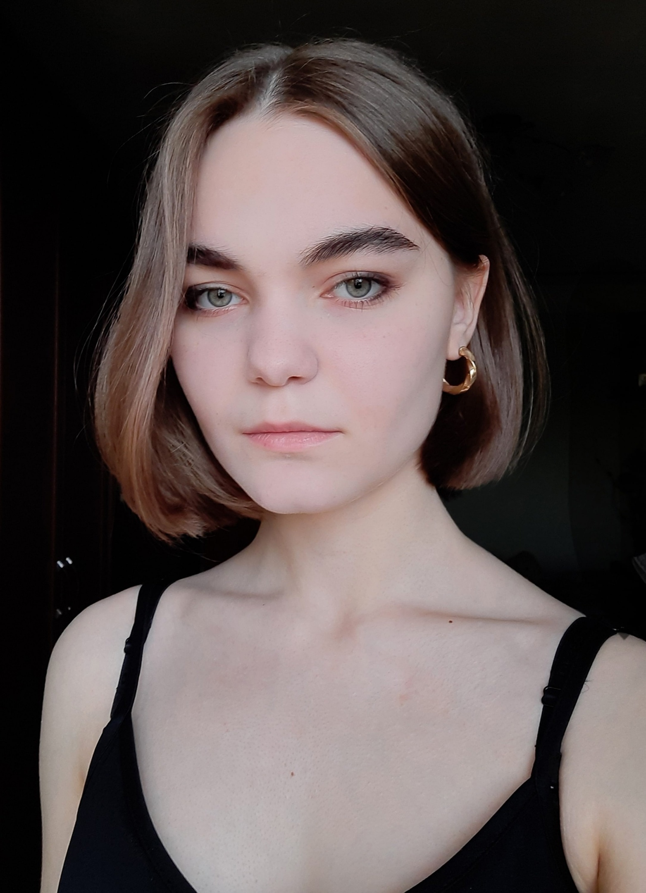

Добрый вечер, я диспетчер
Фотокарточбка
Меня зовут Аня Головина.
Мое фото:

Это буквально картина Анри де Тулуз-Лотрека "Клоунесса Ша-Ю-Као"(1896, бумага, литография), более известная в широких кругах как "Уставшая клоунесса".
Личностные характеристики
В целом, все, что обо мне стоит знать - это то, что я не стесняюсь написать в вк декану факультета.
Причем, именно в тот момент, когда у меня на аватарке стоит фотография клоуна.
Отсылка выше не случайна.
Локация
Мой родной город - Мытищи.
Как говорил Конфуций:
Москва - прыщ на теле Мытищ.
Образование. Начало
До поступления я училась в обычной общеобразовательной мытищинской школе №26.
Ну, собственно, тут ни убавить, ни прибавить.
Образование. Конец?..
Вышка - не первый университет, в котором я учусь.
Я проучилась год на филологическом факультете МГУ, чтобы на следующий год поступать на 1 курс ОП "Филология" во ВШЭ и затем перевестись на ФиКЛ.
Увлечения
Среди своих увлечений я могу выделить следующие:
- волейбол
- шахматы
- чтение шедевров русского экзистенциализма начала XX века
- математика
- языки
Достаточно долгое время я изучала литовский язык и немного начала латышский, но потом внезапно поняла, что это не мое.
Связь
Тут обитает моя страница вк, но туда я редко захожу.
Значительно чаще я появляюсь в телеге, и связаться со мной можно
тут.
Домен коротких ссылок помянем.
Учитывая последнее, очевидно, что со мной невозможно связаться,
легко потерять,
сложно забыть
и так далее.